library(tidyverse)
library(viridis)
library(patchwork)
library(gghighlight)Report
Fictional use case
Example of data analysis with categorical data. In this case randmoly regenerated M&A deals with a few variables. Let’s do a simple exploratory data analysis to help make data driven decisions.
Creating the dataset
Load libraries
Create objects
# Create and sample random dates
Datesx <- seq.Date(from = as.Date("2014-01-01"), to = Sys.Date(), by = 1)
set.seed(123)
DatesFiles <- sample(Datesx, size = 400, replace = TRUE)
DatesFiles <- sort(DatesFiles, decreasing = FALSE)
# Create sectors and regions (categorical)
sectors <- sample(x = c("air", "space", "land", "sea", "ground", "radio"), size = 400, replace = TRUE, prob=c(0.1, 0.2, 0.30, 0.2, 0.1, 0.2))
regions <- sample(x = c("NAM", "LATAM", "EMEA", "APAC", "AUS"), size = 400, replace = TRUE, prob=c(0.1, 0.2, 0.40, 0.2, 0.1))
# Create deal sizes and revenues (numeric)
dealsize <- sample(1:1000, size = 400, replace = TRUE)
revenues <- round(rnorm(400, 20, 5)^2, 0)Create data frame
# create tibbles by combining vectors
evolution <-
tibble(DatesFiles, sectors, regions, dealsize, revenues)
#convert as character variables to factors
evolution <-
evolution %>%
mutate_if(sapply(evolution, is.character), as.factor) %>%
print()# A tibble: 400 × 5
DatesFiles sectors regions dealsize revenues
<date> <fct> <fct> <int> <dbl>
1 2014-01-13 land EMEA 180 200
2 2014-02-10 ground LATAM 293 164
3 2014-03-17 space EMEA 896 639
4 2014-03-24 space AUS 539 289
5 2014-04-27 land EMEA 713 573
6 2014-05-07 radio EMEA 211 761
7 2014-05-17 space EMEA 547 363
8 2014-05-21 sea EMEA 930 459
9 2014-05-31 radio APAC 703 126
10 2014-06-02 land NAM 343 253
# ℹ 390 more rows#filter year
evolution <-
evolution %>%
filter(DatesFiles > "2015-01-01",
DatesFiles < "2023-01-01")Set theme
theme_set(theme_minimal())Basic measurements
Code
a <-
evolution %>%
ggplot(mapping = aes(x = fct_rev(fct_infreq(sectors)))) +
geom_bar() +
geom_text(aes(label = after_stat(count)),
stat = "count",
vjust = 2.5,
colour = "white") + #add labels
labs(x = "Sectors",
title = "Number of deals by sector")
a 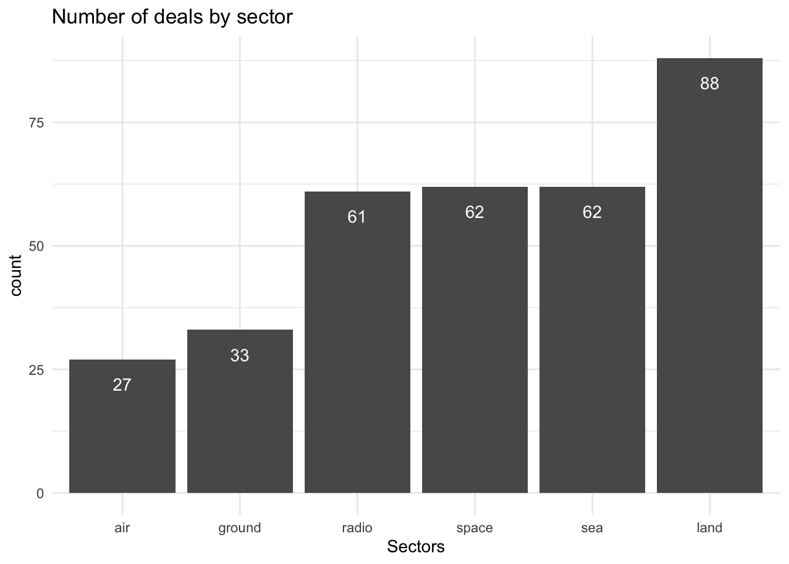
Code
b <-
evolution %>%
count(sectors) %>%
mutate(prop = (n/sum(n))) %>%
ggplot(mapping = aes(x = fct_reorder(sectors, prop), y = prop)) +
geom_col(fill = "red3") +
coord_flip() +
gghighlight(sectors == "radio") +
geom_text(aes(label = paste0(round(prop*100,2), "%")),
vjust = .5,
hjust = 1.2,
size = 4,
color = "white") + #add labels
scale_y_continuous(labels = scales::percent) + # axis label in %
labs(x = "Sectors",
title = "Proportion of deals by sector",
subtitle = "By number of deals") #relabel x axis
b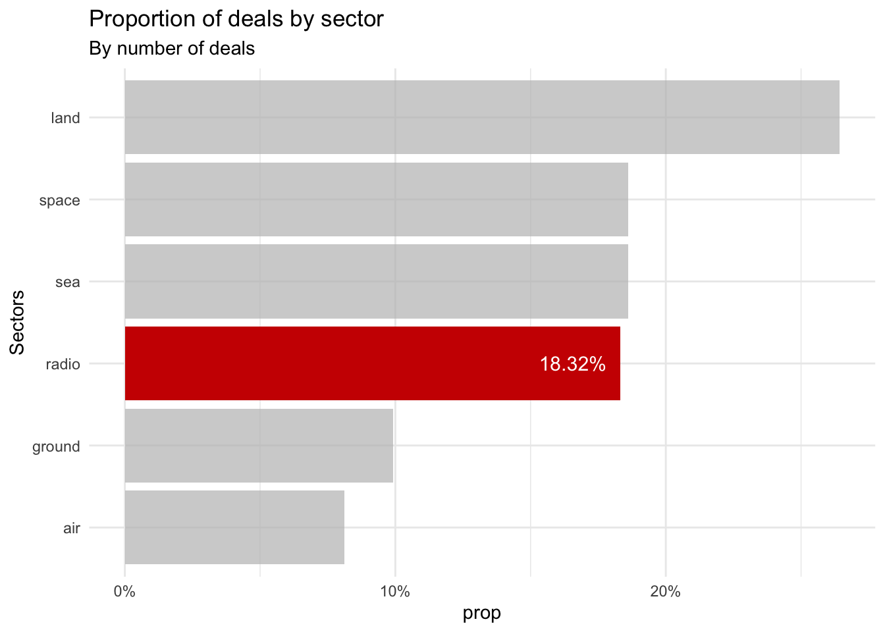
Code
e <-
evolution %>%
ggplot(mapping = aes(x=sectors, fill = regions)) +
geom_bar(position = "fill")
e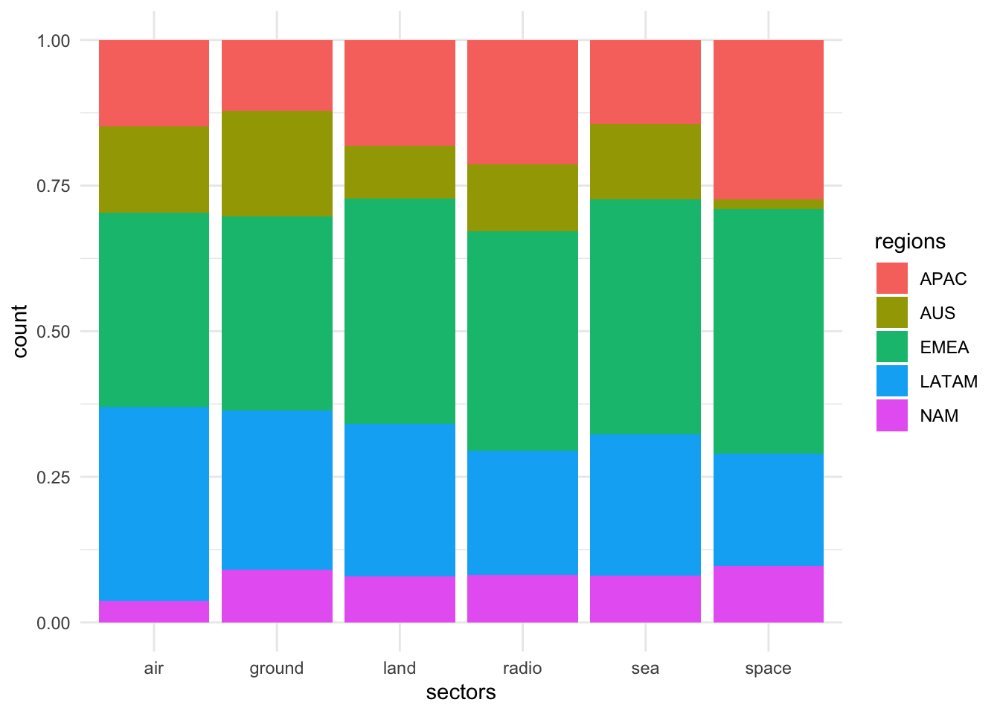
Code
evolution %>%
ggplot(mapping = aes(x=fct_infreq(sectors), fill = fct_infreq(regions))) +
geom_bar(position = "dodge", color = "white") 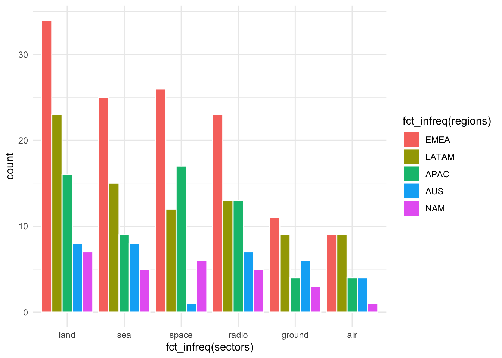
Code
#create base data
evolutioncount <-
evolution %>%
group_by(year = year(DatesFiles)) %>%
count(sectors) %>%
mutate(year = year, n = n)
#create highlight data
evolutioncount.filt <-
evolution %>%
filter(sectors == "radio") %>% # with filter
group_by(year = year(DatesFiles)) %>%
count(sectors) %>%
mutate(year = year, n = n)
#plot base and highlight data on top of each other
acount <-
ggplot(data = evolutioncount, aes(x = year, y = n)) +
geom_col(fill = "red3") +
geom_text(evolutioncount.filt, mapping = aes(label = n),
vjust = -0.8,
color = "red3") +
gghighlight(sectors == "radio")
acount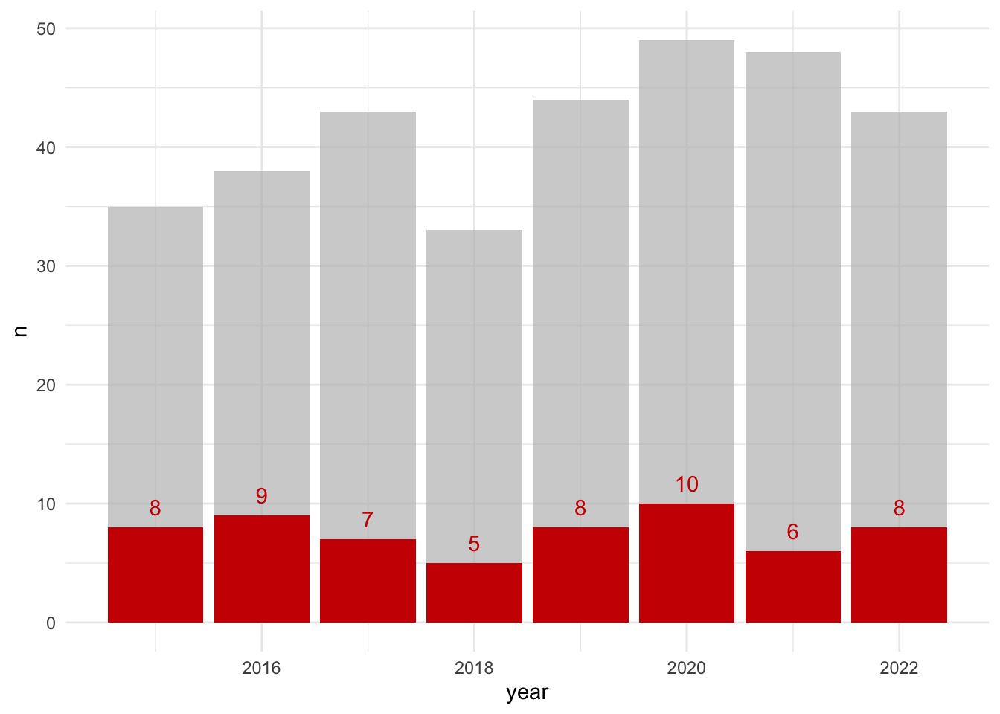
Change rate
Code
#Data
change.roll.avg <-
evolutioncount.filt %>%
ungroup() %>% #important de ungroup
mutate(lag0 = n,
lag1 = lag(lag0),
yoy.change = (lag0 - lag1),
yoy.changeperc = ((lag0/lag1-1)*100)
) %>%
mutate(yoy.changeperc = round(yoy.changeperc, 1))
#Plots
change1 <-
change.roll.avg %>%
select(year, yoy.change, yoy.changeperc) %>%
filter(!is.na(yoy.change)) %>%
ggplot(aes(x = year, y = yoy.change)) +
geom_col(aes(fill = yoy.change > 0)) + # conditional formatting with > 0
geom_text(aes(label = yoy.change, y = yoy.change -0.5 * sign(yoy.change)), color = "white", fontface = "bold") + # data labels, use sign() to fit diverging labels, see : https://tinyurl.com/z5n7uk5k or https://tinyurl.com/3uakpz7y
labs(x = NULL) + # remove x axis title
scale_x_continuous(labels = NULL) + # remove x axis tick labels
scale_fill_manual(values = c("#c9191e", "#27a658" )) +
theme(legend.position = "none") # remove legend of col chart
change2 <-
change.roll.avg %>%
select(year, yoy.change, yoy.changeperc) %>%
filter(!is.na(yoy.changeperc)) %>%
ggplot(aes(x = year, y = yoy.changeperc)) +
geom_hline(aes(yintercept = 0), color = "gray", linetype = "dashed") + #highlight x axis
geom_line(color = "blue4") +
labs(x = NULL)
(change1 / change2) + plot_layout(ncol = 1, heights = c(2.5, 1))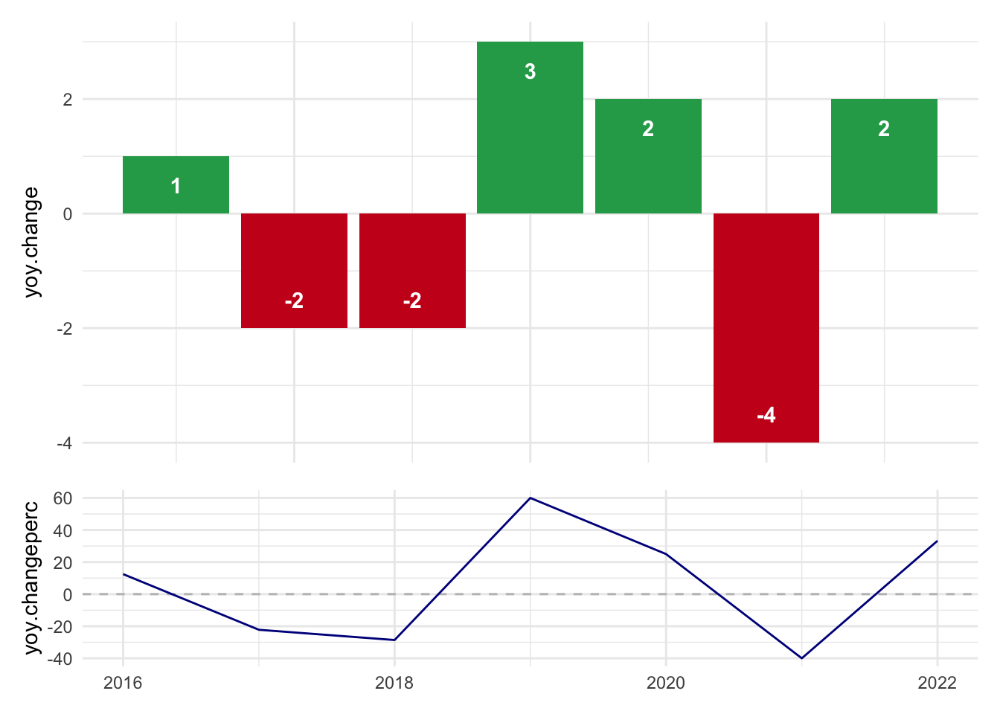
Code
# Resources :
# https://tinyurl.com/23yh29huLine plots
Code
f <-
evolution %>%
group_by(sectors) %>%
arrange(DatesFiles) %>%
mutate(count = row_number()) %>%
ggplot(mapping = aes(x = DatesFiles, y = count, color = sectors)) +
geom_line(linewidth = 0.8)
f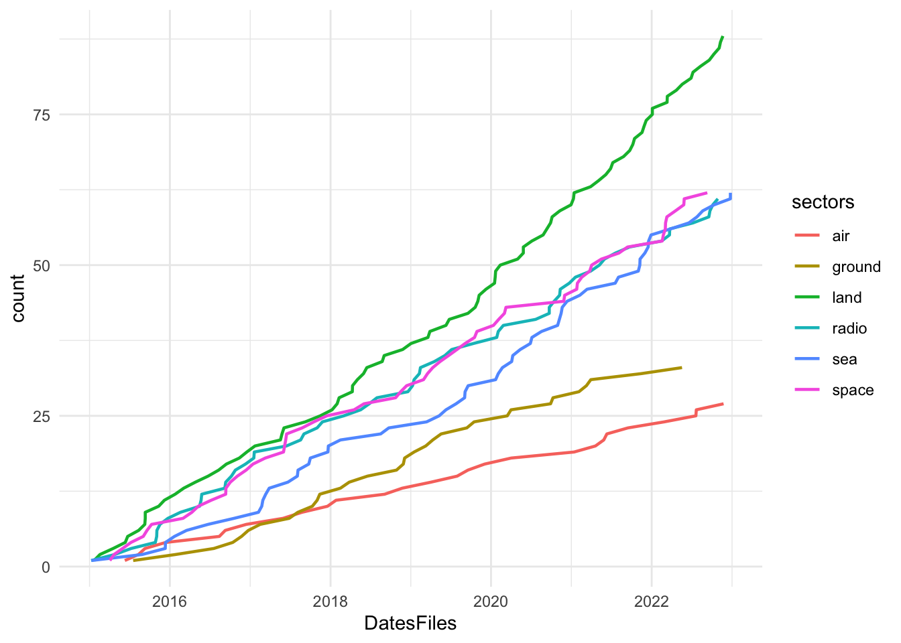
No additional package :
Code
#create main lines (will be in grey)
evolutionmain <-
evolution %>%
group_by(sectors) %>%
arrange(DatesFiles) %>%
mutate(evol = cumsum(dealsize))
#create the highlighted line (will be in red)
evolutionfilt <- evolutionmain %>%
filter(sectors == "radio")
#plot
i <- ggplot(data = evolutionmain, mapping = aes(x = DatesFiles, y = evol, group = sectors)) +
geom_line(linewidth = 0.8,
color = "gray85") + #main lines in gray
geom_line(data = evolutionfilt,
linewidth = 0.8,
color = "red") + #highlight line in red
#add a dot at max value of line (max value of evol)
geom_point(data = evolutionfilt %>% filter(evolutionfilt$evol == max(evol)),
color = "red",
size = 2) +
#add text label to end of line
geom_text(data = evolutionfilt %>% filter(DatesFiles == last(DatesFiles)),
mapping = aes(label = sectors),
color = "red",
hjust = -0.2,
vjust = 0.1) +
# Allow labels to bleed past the canvas boundaries
coord_cartesian(clip = 'off')
i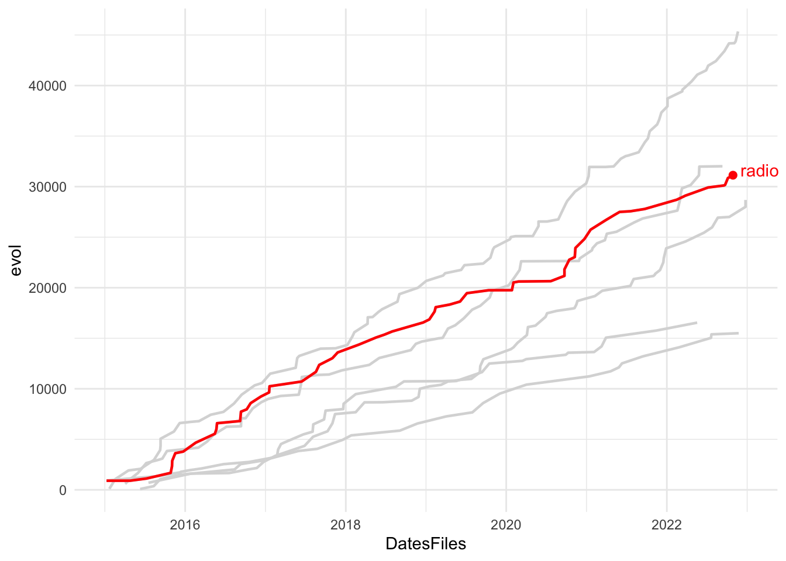
Code
i2 <-
i +
geom_smooth(group = 1, color = "black",
linetype = "dashed",
linewidth = 0.4, se = FALSE,
method = "loess",
formula = y ~ x) +
labs(title = "Valeur cumulée")
i2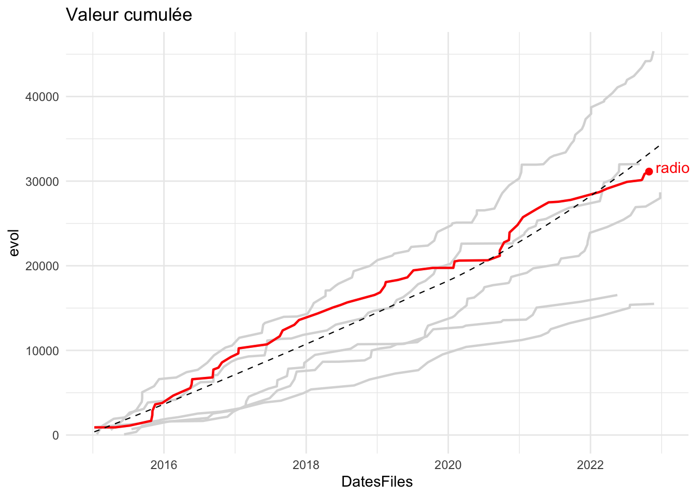
Code
evolutionstacked <-
evolution %>%
mutate(year = year(DatesFiles)) %>% #get year name
group_by(year, sectors) %>%
summarise(n = length(DatesFiles)) %>% #get length of vectors containing DatesFiles (a.k.a "number of dates"; for each sectors in each year)
group_by(year) %>%
mutate(sumperyear = sum(n),
prop = (n/sumperyear*100)) #sum the total number of dates per year and get prop of "each sectors for each year" compared to total number of all sectors in a year
evolutionstacked.filt <- evolutionstacked %>% filter(sectors == "radio")
stacked4 <-
ggplot(data = evolutionstacked, mapping = aes(x = year, y = prop, group = sectors)) +
geom_line(color = "gray80") +
geom_line(data = evolutionstacked.filt,
color = "red3",
linewidth = 1) +
geom_point(data = evolutionstacked.filt %>% filter(year == max(evolutionstacked.filt$year)),
color = "red3") +
geom_text(data = evolutionstacked.filt %>% filter(year == max(evolutionstacked.filt$year)),
mapping = aes(label = paste0(round(prop), "", "%"),
hjust = -0.4,
color = "red3",
fontface = "bold")) +
theme(legend.position = "none") +
scale_y_continuous(limits = c(0,100)) +
labs(title = "Part moyenne")
stacked4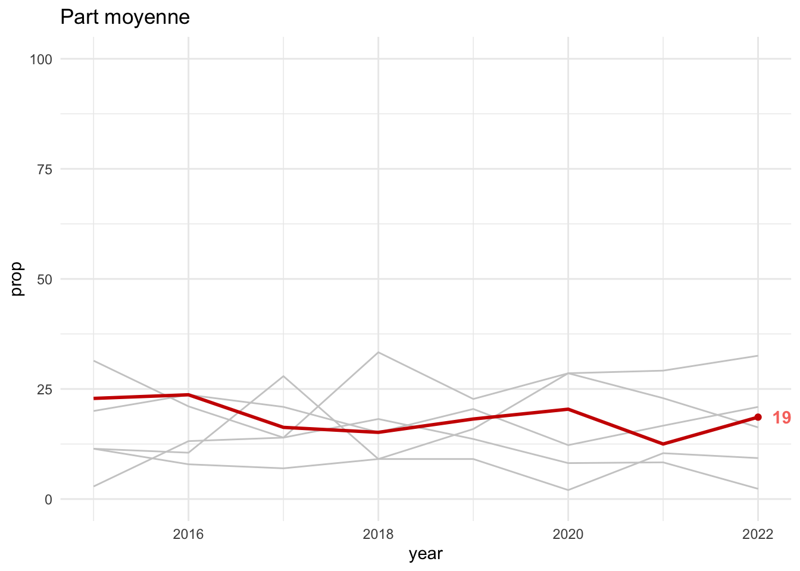
Using gghighlight
Code
f +
gghighlight(sectors == "space") 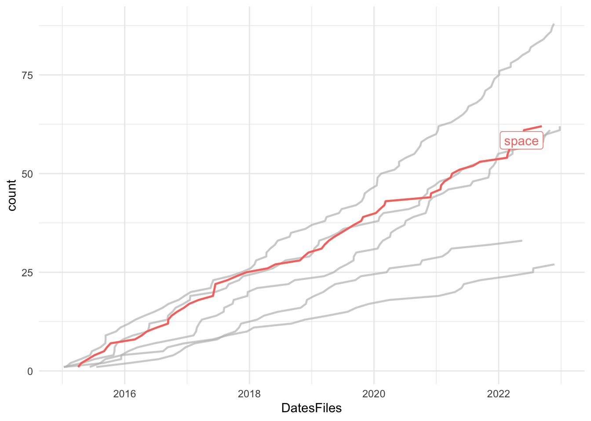
Using facets + gghighlight
Code
## comptage dans le temps
f +
facet_wrap(~sectors)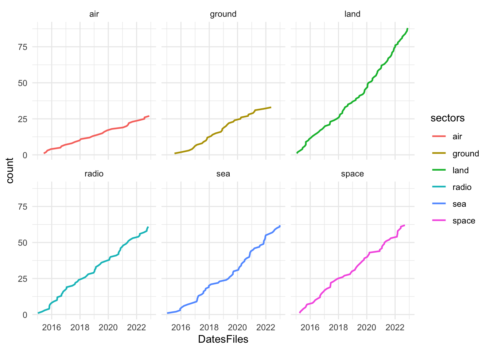
Code
f +
gghighlight(label_params = list(size = 3)) + #adjust size of labels
facet_wrap(~sectors) +
theme(
strip.text.x = element_blank() #remove titles from facets
)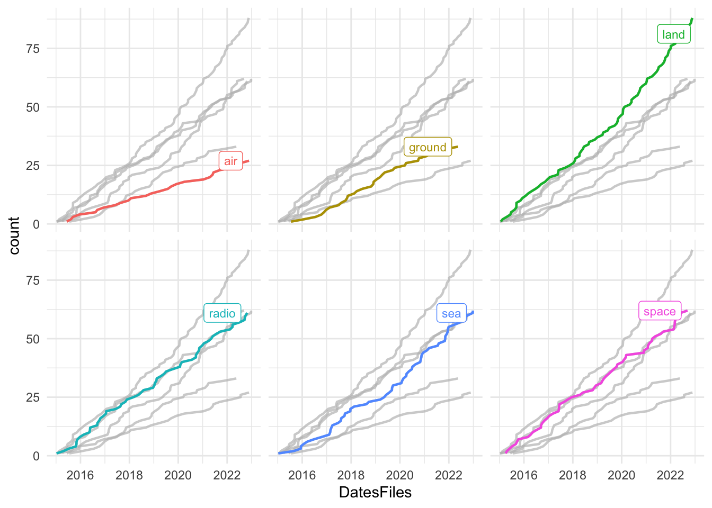
with multiple gghighlights :
Code
f +
gghighlight(sectors %in% c("space", "radio"),
label_params = list(nudge_x = 2))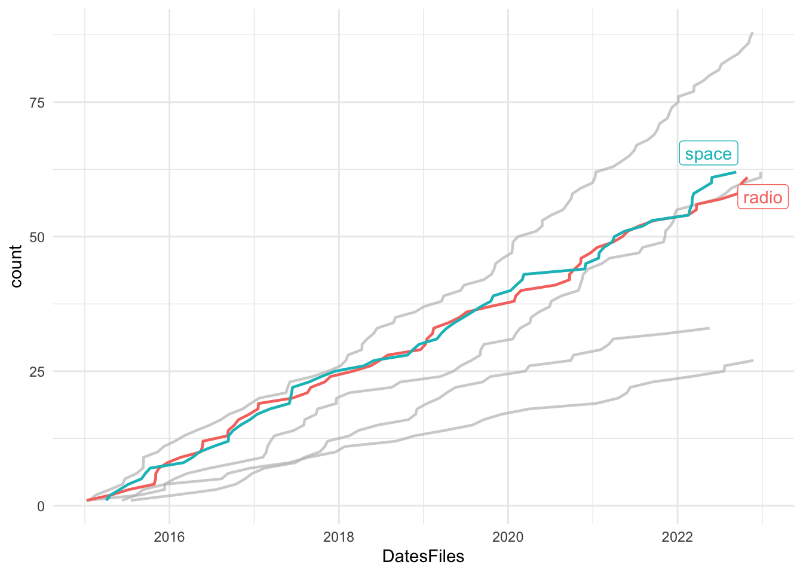
Some thoughts
- For fun we could try library(geomtextpath)
- For better reliability we could add labels without additional packages:
https://stackoverflow.com/questions/29357612/plot-labels-at-ends-of-lines (answered Jul 2, 2018 at 15:57)
Numeric variables
Summary stats
Code
evolution %>%
group_by(sectors) %>%
summarize(meandeal = mean(dealsize),
mediandeal = median(dealsize),
max = max(dealsize),
min = min(dealsize),
IQR = IQR(dealsize),
NBdeals = n()) %>%
arrange(mediandeal)# A tibble: 6 × 7
sectors meandeal mediandeal max min IQR NBdeals
<fct> <dbl> <dbl> <int> <int> <dbl> <int>
1 sea 463. 435 999 26 506. 62
2 air 574. 515 967 78 460 27
3 radio 510. 540 958 2 525 61
4 space 516. 543 981 11 455. 62
5 ground 501. 544 978 9 622 33
6 land 515. 558 993 1 549 88Sum
Which is the most important sector in terms of deal size ?
Code
j <-
evolution %>%
group_by(sectors) %>%
summarise(sumdeal = sum(dealsize)) %>%
ggplot(mapping = aes(x = fct_reorder(sectors, sumdeal), y = sumdeal)) +
geom_col() +
geom_text(aes(label = sumdeal),
vjust = 2,
size = 4,
color = "white") +
labs(x = NULL)
j +
labs(title = "Sum of deals' value per sector",
subtitle = "In USD",
x = NULL)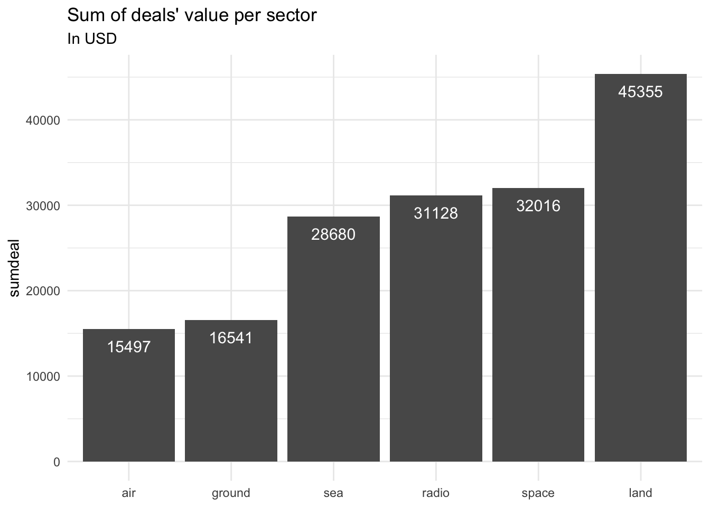
Distribution
How are the deals distributed in terms of deal size ?
Code
## Distribution des tailles de Deals
L <-
evolution %>%
ggplot(aes(x = dealsize)) +
geom_histogram(binwidth = 20)
L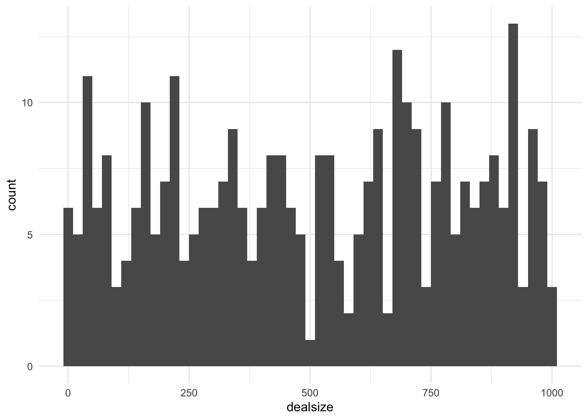
Density
Code
## Densité des tailles de Deals par sectors
m <-
evolution %>%
ggplot(aes(x = dealsize, fill = sectors)) +
geom_density(alpha = 0.3) +
geom_rug(alpha = 0.6) + #partie basse du graphe
facet_wrap(~sectors)
m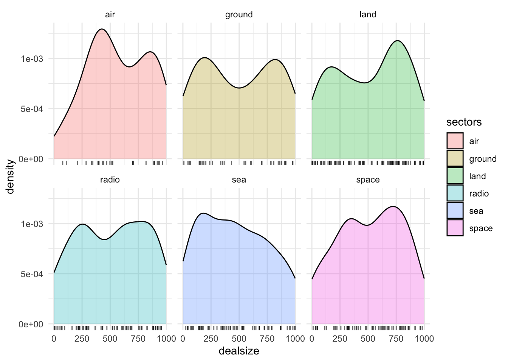
Boxplot
Code
n <-
evolution %>%
group_by(sectors) %>%
mutate(mediandeal = median(dealsize)) %>%
ggplot(mapping = aes(x = fct_reorder(sectors, mediandeal), y = dealsize)) +
geom_boxplot() +
geom_jitter(width = 0.1, alpha = 0.4) +
labs(title = "Deal size distribution per sector",
subtitle = "In USD",
x = "Sector") +
coord_flip()
n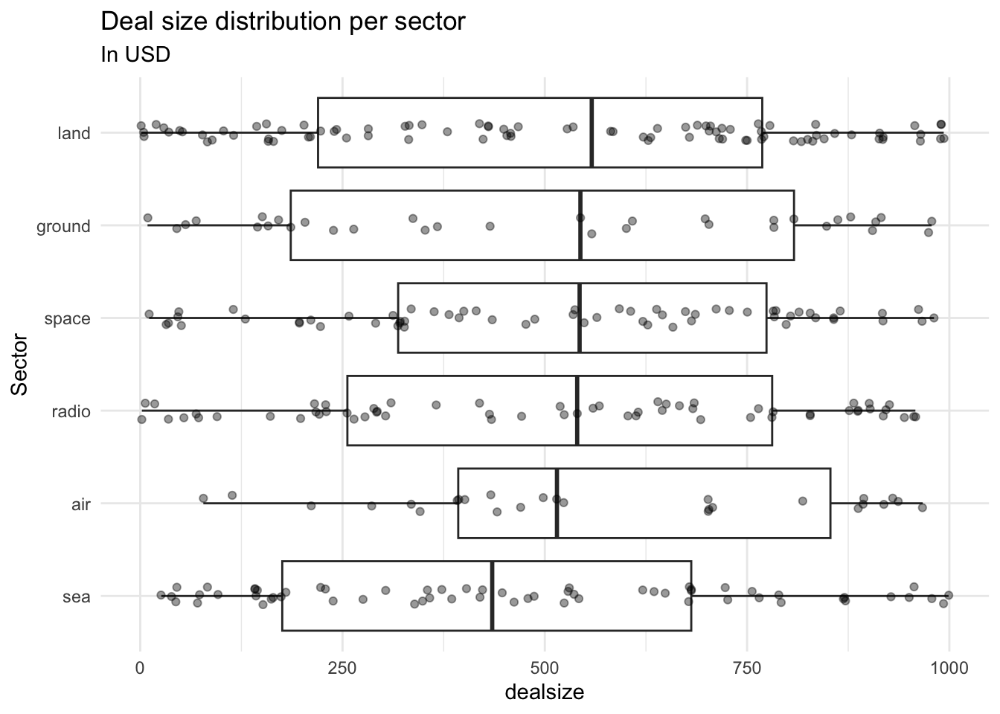
Code
o <-
evolution %>%
group_by(sectors) %>%
mutate(mediandeal = median(dealsize)) %>%
ggplot(mapping = aes(x = fct_reorder(sectors, mediandeal), y = dealsize)) +
geom_boxplot(fill = "blue3", alpha = 0.1, color = "blue3") +
geom_jitter(aes(color = sectors), width = 0.1, alpha = 0.4) +
labs(title = "Deal size distribution per sector",
subtitle = "In USD",
x = "Sector") +
guides(color = guide_legend(override.aes = list(size = 5))) + #increase legend items size
coord_flip()
o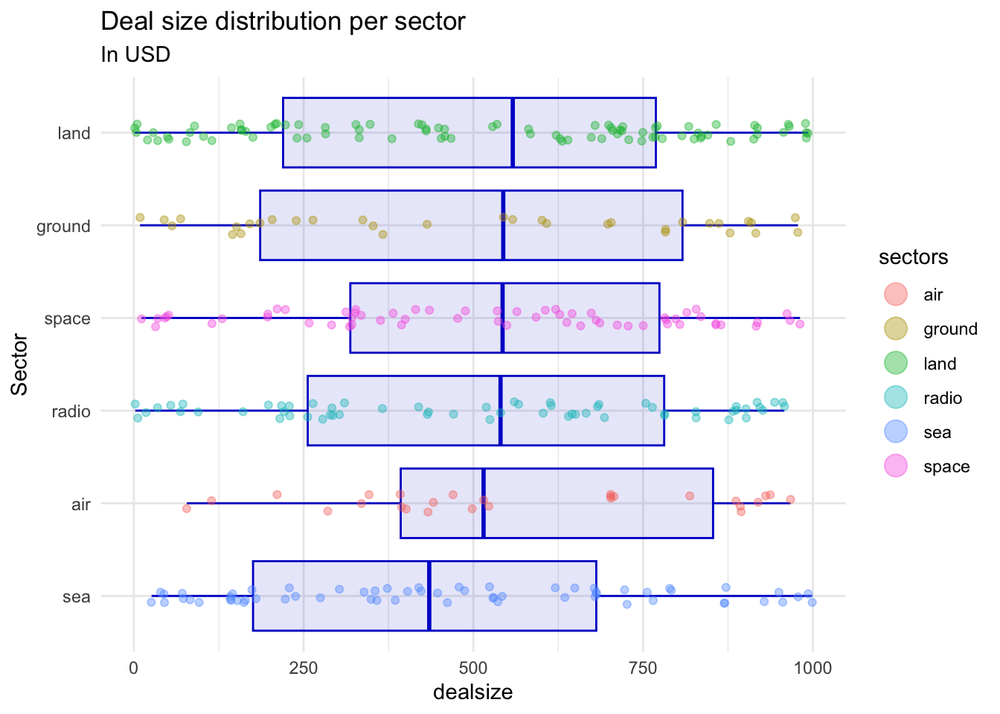
Binning
Let’s create 3 buckets of deal sizes and count the number of deals in each of them :
Code
# binning deal sizes
# add column named "bin" containing 3 types of dealsizes
bin <-
evolution %>%
mutate(bin = cut(evolution$dealsize,
breaks = c(0,100,500,999)))
#relabeled bin
bin <-
evolution %>%
mutate(bin = cut(evolution$dealsize,
breaks = c(0,100,500,999),
labels = c("small < 100", "100 < medium < 500 ", "big > 500")))
# plot bins
bin %>%
ggplot(mapping = aes(x = bin)) +
geom_bar() +
geom_text(aes(label = after_stat(count)),
stat = "count",
vjust = 2.5,
colour = "white") 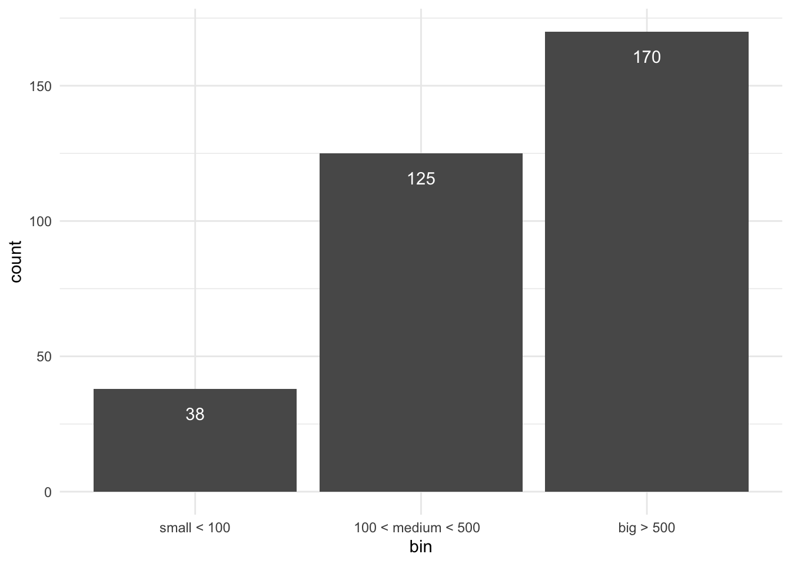
Code
# plot proportions for each bin
bin %>%
group_by(bin) %>%
summarise(sumperbin = sum(dealsize)) %>%
mutate(tot = sum(sumperbin), prop = sumperbin/tot*100) %>% #proportion
ggplot(mapping = aes(x = bin, y = prop)) +
geom_col() +
geom_text(aes(label = round(prop)), vjust = 2.5, colour = "white")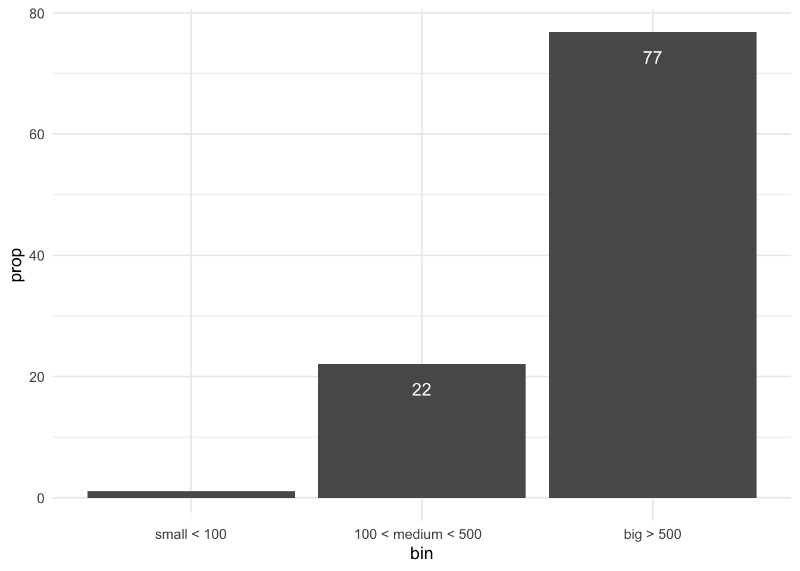
Code
p <-
bin %>%
group_by(sectors, bin) %>%
summarise(sumdeal = sum(dealsize)) %>%
group_by(sectors) %>%
mutate(totsecteur = sum(sumdeal)) %>%
arrange(rev(sumdeal)) %>%
mutate(pos = cumsum(sumdeal)) %>%
ggplot(mapping = aes(x = fct_reorder(sectors, totsecteur), y = sumdeal, fill = bin)) +
geom_bar(stat="identity")
p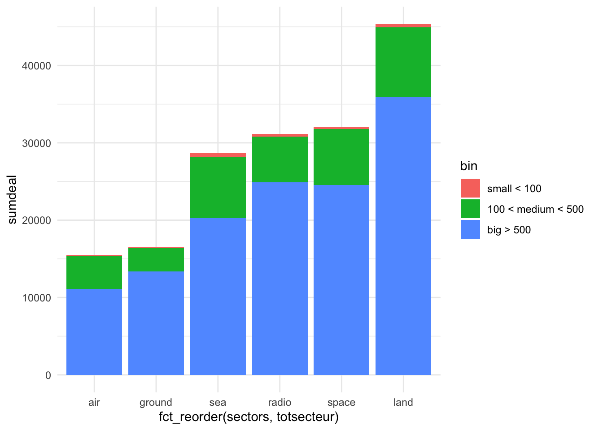
Code
binsizestackprep <-
bin %>%
group_by(sectors, bin) %>%
#add column summarizing total sum of deals per sectors for each bin
summarise(sumperbin = sum(dealsize)) %>%
#get proportion
mutate(tot = sum(sumperbin), prop = sumperbin/tot*100)
#plot
binsizestack <-
binsizestackprep %>%
ggplot(aes(x = fct_reorder(sectors, tot), y = prop, fill = fct_rev(bin))) + #use fct_rev on (bin) to reverse stacked bar order (optional...)
geom_col(position = "dodge") +
labs(x = "Sector", color = "Deal category") + #change legend name with color = ""
#need to use scale_fill_discrete, instead of scale_color_discrete to reorder legend cat
scale_fill_discrete(breaks=c("big > 500", "medium > 200" , "small < 200")) #change legend label order
binsizestack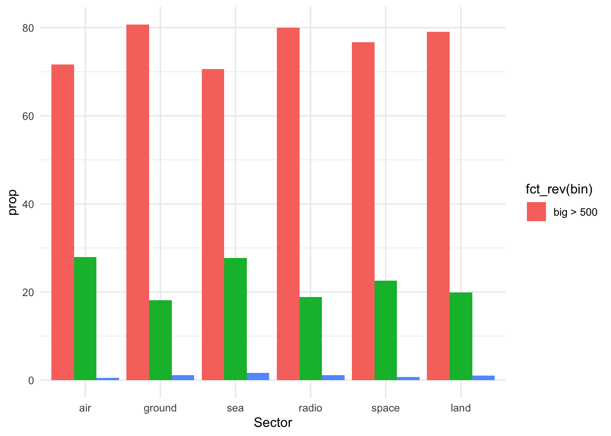
Bubble charts
Code
q <-
evolution %>%
ggplot(aes(x = DatesFiles, y = dealsize, size = (revenues/100))) +
geom_point(color= "gray", alpha = 0.5)
q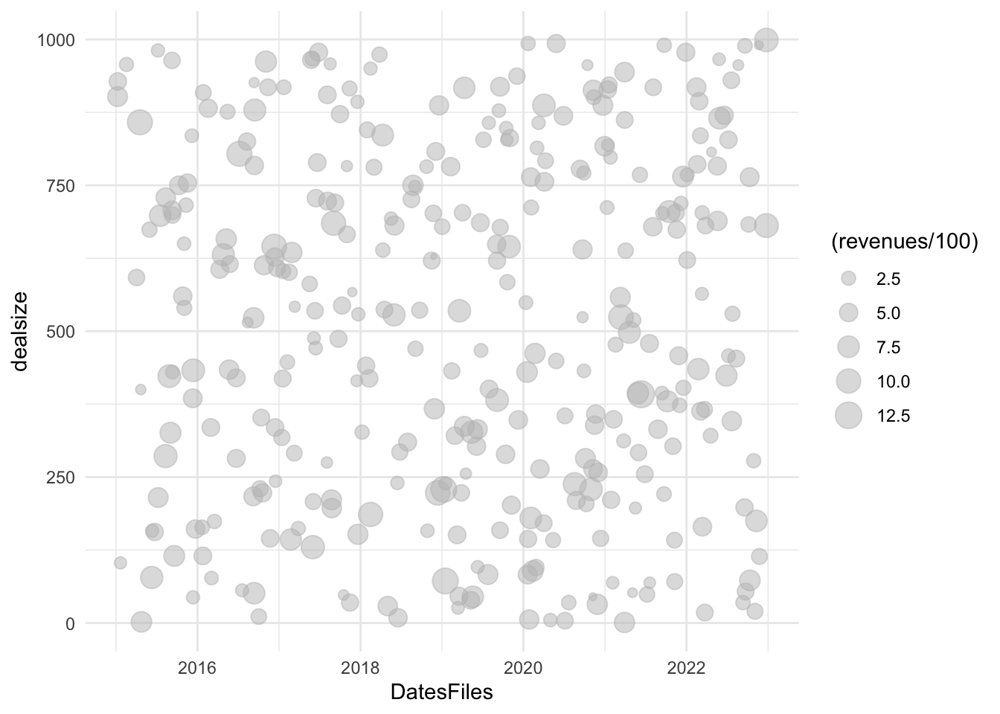
Code
r <-
q +
geom_point(data = evolution %>% filter(evolution$sectors == "radio"),
alpha = 0.5,
color = "magenta")
r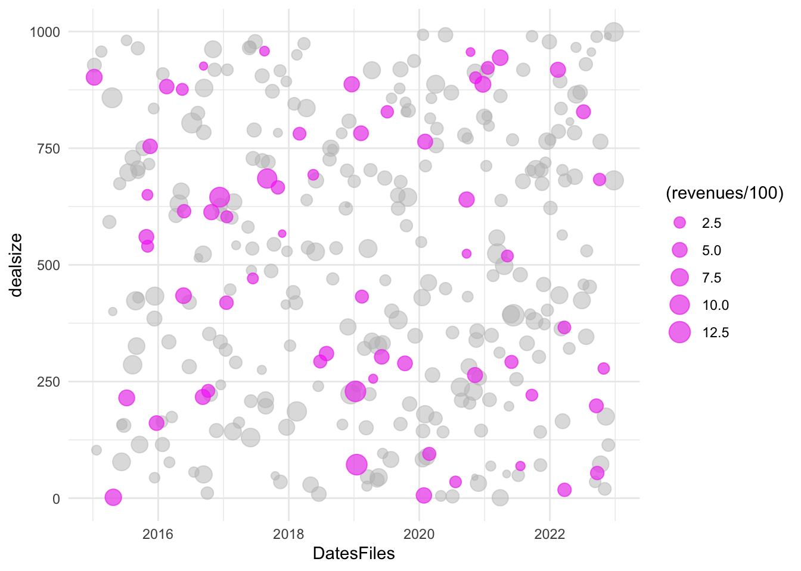
Code
s <-
q +
geom_point(data = evolution %>% filter(evolution$dealsize > 900),
alpha = 0.5,
color = "red")
s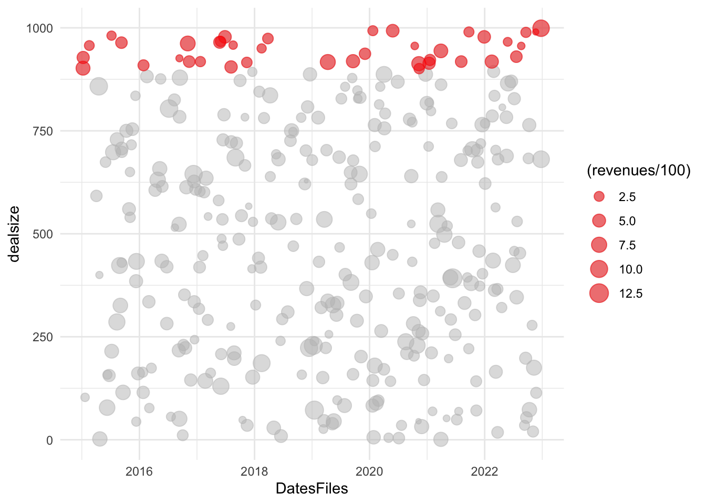
Heatmaps
Create data
Code
#get year, month, week
weekcount <-
evolution %>%
mutate(year = year(DatesFiles),
month = month(DatesFiles, label = TRUE, abbr= TRUE),
wk = week(DatesFiles))
weekcount# A tibble: 333 × 8
DatesFiles sectors regions dealsize revenues year month wk
<date> <fct> <fct> <int> <dbl> <dbl> <ord> <dbl>
1 2015-01-08 radio APAC 902 603 2015 Jan 2
2 2015-01-09 sea EMEA 928 429 2015 Jan 2
3 2015-01-21 land APAC 103 170 2015 Jan 3
4 2015-02-17 land AUS 957 246 2015 Feb 7
5 2015-04-03 space APAC 592 368 2015 Apr 14
6 2015-04-18 land EMEA 858 1074 2015 Apr 16
7 2015-04-22 space NAM 400 114 2015 Apr 16
8 2015-04-25 radio APAC 2 658 2015 Apr 17
9 2015-05-31 space EMEA 674 302 2015 May 22
10 2015-06-10 air APAC 78 803 2015 Jun 23
# ℹ 323 more rowsWeek
Code
#plot week intensity for each year with heat map with geom_tile()
weekcount %>%
group_by(year) %>%
count(wk) %>%
ggplot(aes(x = wk, y = year, fill = n)) +
geom_tile(color="white", linewidth = 0.1) + #use color and size to draw borders
coord_equal() + #draw nice squares instead of rectangles
scale_fill_viridis(name="# Deals", option = "plasma") +
theme(
panel.background = element_rect(fill = NA, color = NA), # Background of plotting area
)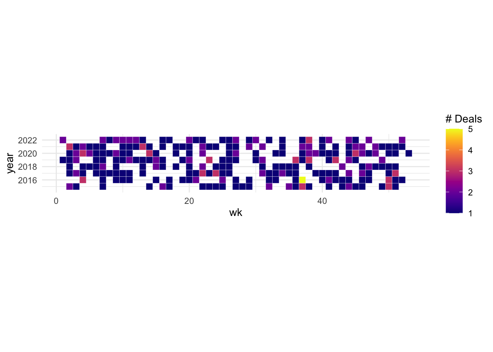
Month
Code
#plot month intensity for each year with heat map with geom_tile()
t <-
weekcount %>%
group_by(year) %>%
count(month) %>% #change count to month
ggplot(aes(x = month, y = year, fill = n)) + #change x to month
geom_tile(color="white", linewidth = 0.1) + #use color and size to draw borders
coord_equal() + #draw nice squares instead of rectangles
theme(
panel.background = element_rect(fill = NA, color = NA) # Background of plotting area
) +
geom_text(aes(label=n), color="grey", size=3) # adding labels
t
Overview
((b + i2 + acount) /
(stacked4 + a + (change1 / change2))
)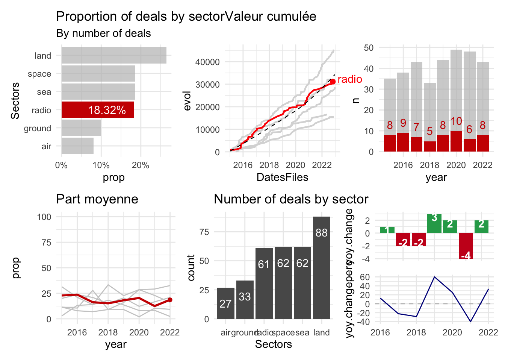